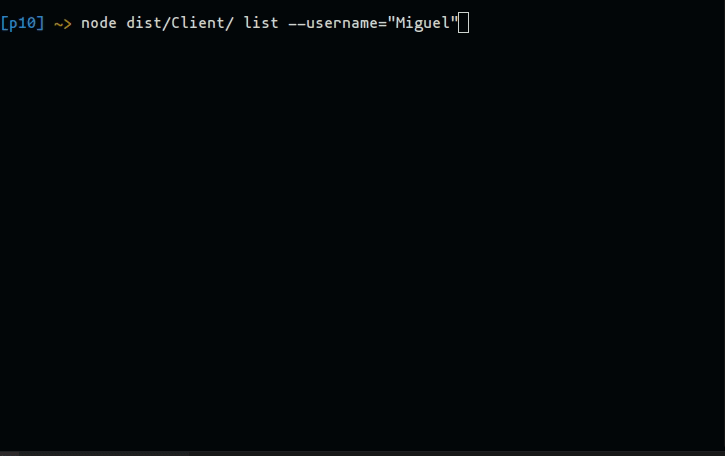
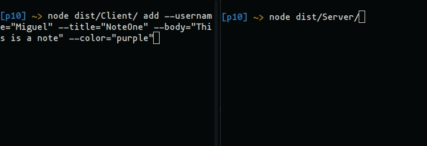

Ver en Github
Github page
Introducción
A continuación abordaremos el desarrollo de una aplicación para la gestión de notas que funcione bajo el modelo cliente-servidor. Haremos uso de un Gestor de Notas desarrollado anteriormente y nos ocuparemos principalmente de emplear sockets asíncronos y la emisión de eventos para crear un servidor y un cliente.
El cliente se encargará de parsear los comandos mediante el uso del paquete yargs. Y, tras enviar las peticiones al servidor, esperará la respuesta.
Ejemplo de funcionamiento:
- Servidor

- Cliente 
Comunicaciones
Para comunicar el cliente con el servidor emplearemos sockets asíncronos utilizando la clase Socket proporcionada por la librería net de Node.js.
El cliente enviará una petición con la siguiente forma:
export type RequestType = {
type: CommandType; // Acción que se requiere llevar a cabo (add, list, read, remove, edit)
username: string, // Usuario
title?: string, // Título de la nota
body?: string, // Cuerpo de la nota
color?: KnownColors, // Color de la nora
params?: EditObj // Nuevos parámetros para editar una nota
}
El servidor recibirá las peticiones, las procesará, y enviará una respuesta con la forma:
export type ResponseType = {
success: boolean, // Indica si la petición se ha procesado correctamente
output: any, // Salida
};
Cliente
Partiremos del código utilizado en la aplicación principal del Gestor de Notas previamente desarrollado, ya que nuestro cliente se encargará de parsear las acciones por línea de comandos. Es decir, en caso de, por ejemplo, seleccionar un color no soportado, o introducir comandos no conocidos, la petición no se enviará sino que dicho error será capturado por el código cliente y se mostrará un mensaje informativo al usuario.
Color no soportado
Como podemos observar, en caso de detectar un error en el cliente, la petición no es enviada:
